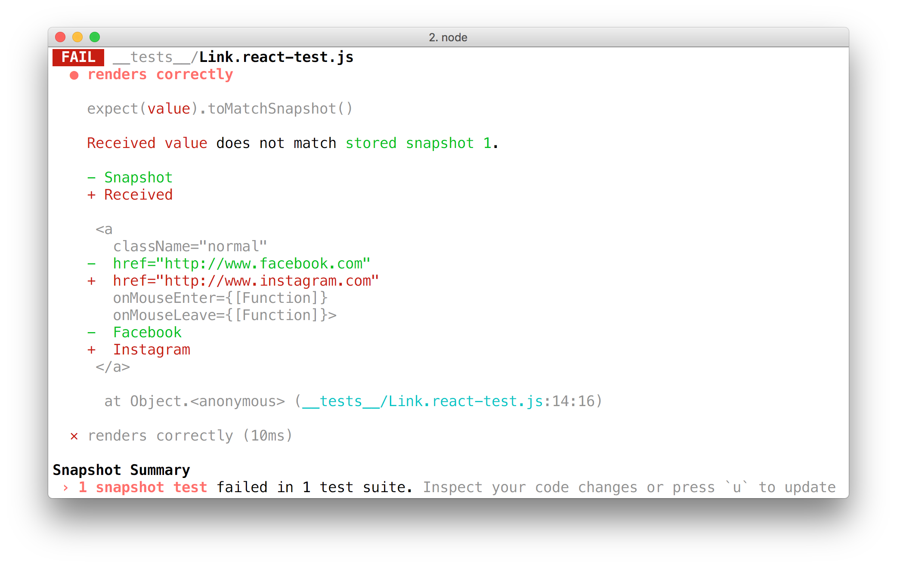

class: center, middle # Tooling ### Daniel Haering Michael Frevert Gerrit Haake <br/> Felix Schilk Simeon Weigel ####Rich Client Application Development<br/>Brunsmann --- # Softwarequalität - Tooling 0. Testing functional javascript 0. How to test nodejs apps using mocha chai and sinonjs 0. Snapshot Testing react with jest --- # Testing functional javascript ## functional javascript - besteht aus kleinen, wiederverwendbare und zusammensetzbare Funktionen - Die Funktionen haben nur eine spezifische Aufgabe und geben den Wert zurück für den selben Input jedesmal - So eine Funktion heißt pure function - pure functions machen es einfacher Unit Test zu schreiben --- # Testing functional javascript ## Testing - können in ein separates Dokument oder in ein "script" element auf der Seite ```javascript describe("isPalindrome", () => { it("returns true if the string is a palindrome", () => { expect(isPalindrome("abba")).toEqual(true); }); }); ``` - erzeugt bei Aufruf einen Fehler, da die Funktion "isPalindrome()" nicht implementiert ist ```js const isPalindrome = (str) => true; ``` - Mit der Implementierung dieser Funktion und Neuaufruf ist der Test erfolgreich --- # Testing functional javascript ## Testing ```js describe("isPalindrome",()=>{ it("returns true if the string is a palindrome", () => { expect(isPalindrome("abba")).toEqual(true); }); it("return false if the string isn't a palindrome",() => { expect(isPalindrome("Bubba")).toEqual(false); }); }); ``` - Erweiterung des ersten Tests um einen Test der ein Problem ausgibt - Die zuprüfende Funktion gibt nur true zurück und kein false und muss erweitert werden ```js const isPalindrome = (str) =>{ return str.split("").reverse().join("") === str; }; ``` --- # How to test nodejs apps using mocha chai and sinonjs ## Begriffserklärung - mocha: - Ausführen fertiger Tests (Unit Test Framework) - chai: - Aufstellen der Tests (Assertion Library) mit Hilfe von assertions (Behauptungen) - sinon.js: - Bereitstellen von Spies, Stubs und Mocks - also Dummy-Objekte, welche Komponenten des Programms wiederspiegeln --- # How to test nodejs apps using mocha chai and sinonjs ## Installation mocha ```bash npm install -g mocha ``` chai ```bash npm i --save-dev chai ``` sinon ```bash npm i --save-dev sinon ``` --- # How to test nodejs apps using mocha chai and sinonjs ## Spies (=Spion) - Erstellen von Fake-Funktionen - Überprüfen, wie oft/wann/etc. Funktionen ausgeführt wurden - Spies auf bereits implementierte Funktionen möglich --- # How to test nodejs apps using mocha chai and sinonjs ## Stubs (=Stellvertreter) - Ersetzen von Funktionen - Zurückgeben gewollter Werte dadurch möglich - sinnvoll bei Funktionen, welche auf Ergebnisse anderer Funktionen angewiesen sind - stellvertretend für realen Code - Benutzung bei Code, welcher bspw. noch nicht entwickelt wurde oder auch Http-Responses --- # How to test nodejs apps using mocha chai and sinonjs ## Mocks (=Fälschung) - ähnlich wie Stubs - zusätzliches Verifizieren des Verhaltens der zu testenden Klasse - Sicherstellen von vollständigen, korrekten Metodenaufrufen + Parameterlisten - liefern wie Stubs festgelegte Daten zurück --- # How to test nodejs apps - Testing Beispiel Stub: eingeloggter Benutzer ```js describe("getIndexPage", function() { it("send hey when user is logged in", function() {...}); it("send something else when user is NOT logged in", function() { let user = {isLoggedIn: function(){}} //Stub isLoggedIn function and make it return false always const isLoggedInStub = sinon.stub(user, "isLoggedIn").returns(false); //pass user into the req object let req = {user: user} //Have `res` have a send key because we use `res.send()` in our function //replace empty function with a spy let res = {send: sinon.spy()} indexPage.getIndexPage(req, res); //let's see what we get on res.send //console.log(res.send); -> `res.send` called once expect(res.send.calledOnce).to.be.true; expect(res.send.firstCall.args[0]).to.equal("You need to log in"); // assert that the stub is logged in at least once expect(isLoggedInStub.calledOnce).to.be.true; }) }); ``` --- # How to test nodejs apps - Testing Beispiel Mock: eingeloggter Benutzer ```js describe("getIndexPage", function() { it("should send hey when user is logged in", function() { //instantiate a user object with an empty isLoggedIn function let user = {isLoggedIn: function(){}} //Stub isLoggedIn function and make it return true always const isLoggedInStub = sinon.stub(user, "isLoggedIn").returns(true); //pass user into the req object let req = {user: user} //Have `res` have a send key because we use `res.send()` in our function let res = {send: function(){}} //mock res const mock = sinon.mock(res); //build how we expect it to work mock.expects("send").once().withExactArgs("Hey"); indexPage.getIndexPage(req, res); expect(isLoggedInStub.calledOnce).to.be.true; //verify that mock works as expected mock.verify(); }); }); ``` --- # Snapshot Testing React with Jest Was ist Snapshot Testing? - Jest rendert eine UI(User Interface) Komponente und speichert den Zustand in einer Momentaufnahme(snapshot) - Jest vergleicht aktuellen Zustand mit gespeicherten snapshots - Snapshot-Tests sind ein sehr nützliches Tool, wenn man sicherstellen möchte, dass sich die UI nicht unerwartet ändert - Komponenten müssen vor ersten Test schon funktionieren --- # Snapshot Testing React with Jest ## Einrichten von Jest Installation ```javascript npm install react-test-renderer ``` Benötigter Import ```javascript import renderer from 'react-test-renderer'; ``` --- # Snapshot Testing React with Jest - In einer funktionierender Komponente müssen folgende Codezeilen enthalten sein, damit Snapshots erstellt werden und der Test ausgeführt wird ```javascript it('renders correctly', () => { const tree = renderer.create(<App />).toJSON();//Rendern der Komponente expect(tree).toMatchSnapshot(); //Vergleicht oder erstellt Snapshots }); ``` Tests starten mit ```javascript npm <App> ``` --- # Beispiel eines SnapshotsFiles ```javascript exports[`test renders a snapshot 1`] = ` <div className="App"> <div className="App-header"> <img alt="logo" className="App-logo" src="test-file-stub" /> <h2> Welcome to React </h2> </div> <p className="App-intro"> To get started, edit <code> src/App.js </code> and save to reload. </p> </div> `; }); ``` --- # Fehlgeschlagene Tests - Sollte sich der aktuelle Zustand der Komponente mit der in dem Snapshot gespeicherten Zustand unterscheiden, schlägt der Test fehl  --- # Fehlgeschlagene Tests - In Grün wird der Zustand des letzten Snapshots angezeigt und in rot die des aktuellen Zustandes. - 2 Möglichkeiten für das weitere Vorgehen: 0. Updaten des Snaphots durch Eingabe -u (Snapshot wird auf aktuellen Stand aktualisiert) 0. Interaktiven Modus benutzen um Snapshots entweder zu aktualisieren oder zu überspringen (Nächste Seite) --- # Interaktiver Modus